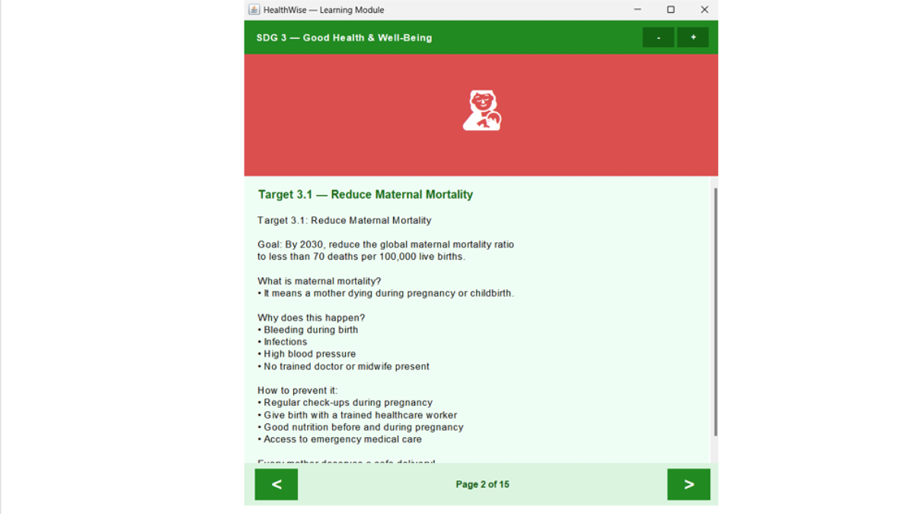

HealthWise
A Java-Based Health Learning and Quiz Application
HealthWise is a Java Swing desktop application designed to help users learn about health topics and test their knowledge through interactive quizzes. The application incorporates Object-Oriented Programming (OOP) principles and gamification features to create an engaging learning experience.

Project Overview
HealthWise is a desktop application developed using Java Swing to provide health-related learning content and interactive quizzes. The system applies OOP concepts such as abstraction, inheritance, encapsulation and interface-based polymorphism to organise its classes and functionalities.
Project Objectives
- Provide users with accessible health-related learning content.
- Allow users to test their knowledge through interactive quizzes.
- Apply Object-Oriented Programming principles in application development.
- Encourage user engagement through points, badges and leaderboard features.
Key Features
- Health learning modules with content navigation.
- Interactive quizzes with automatic score calculation.
- Motivational messages based on quiz performance.
- Gamification system with points and achievement badges.
- Leaderboard to display user rankings.
- User management and file-based data storage.
My Contributions
I contributed to HealthWise through interface design, software testing and collaborative development of the application's core modules. My responsibilities included:
- Designing the Gamifiable interface to define standard methods for awarding badges, managing points and displaying the leaderboard.
- Testing the Saveable interface to verify file operations, including saving, loading and checking user records.
- Testing the HealthContent abstract class to ensure proper content display and information retrieval through inheritance.
- Collaborating with teammates to develop GameModule, UserManager, LearningModule and QuizModule.
Through this project, I strengthened my understanding of object-oriented programming, interface design, software testing and collaborative Java development.
OOP Concepts Applied
- Abstraction: Using an abstract class to define common content structures.
- Inheritance: Reusing shared properties and methods in child classes.
- Encapsulation: Protecting data through access modifiers and methods.
- Polymorphism: Using interfaces to define standard behaviours for different classes.
- Method Overloading: Providing different versions of the getInfo() method.